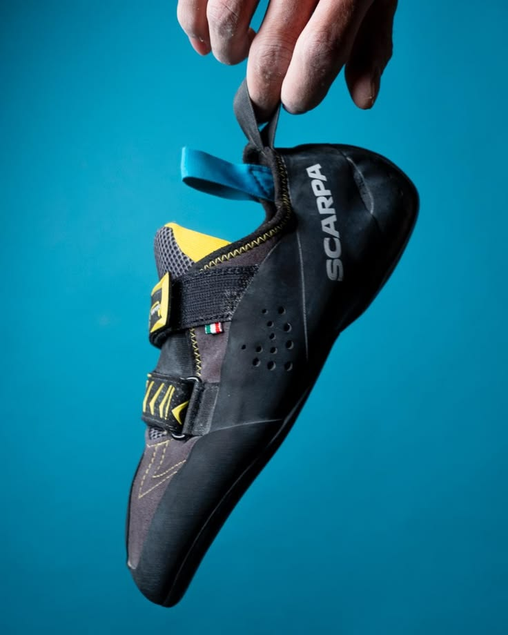

Chaussons
Les chaussons sont indispensables pour pratiquer l'escalade. Leur semelle en gomme adhérente permet d'obtenir une meilleure accroche sur les prises et les petites aspérités du mur. Leur forme épouse le pied afin d'améliorer la précision des appuis et de faciliter les mouvements techniques. Le choix d'une paire dépend notamment du niveau, de la morphologie du pied et du type d'escalade pratiqué.